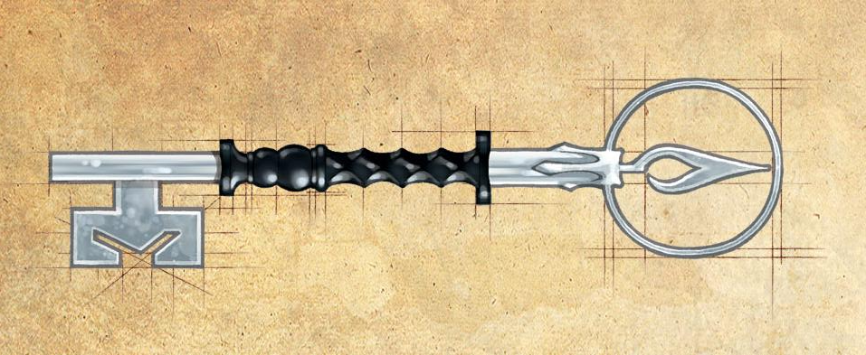
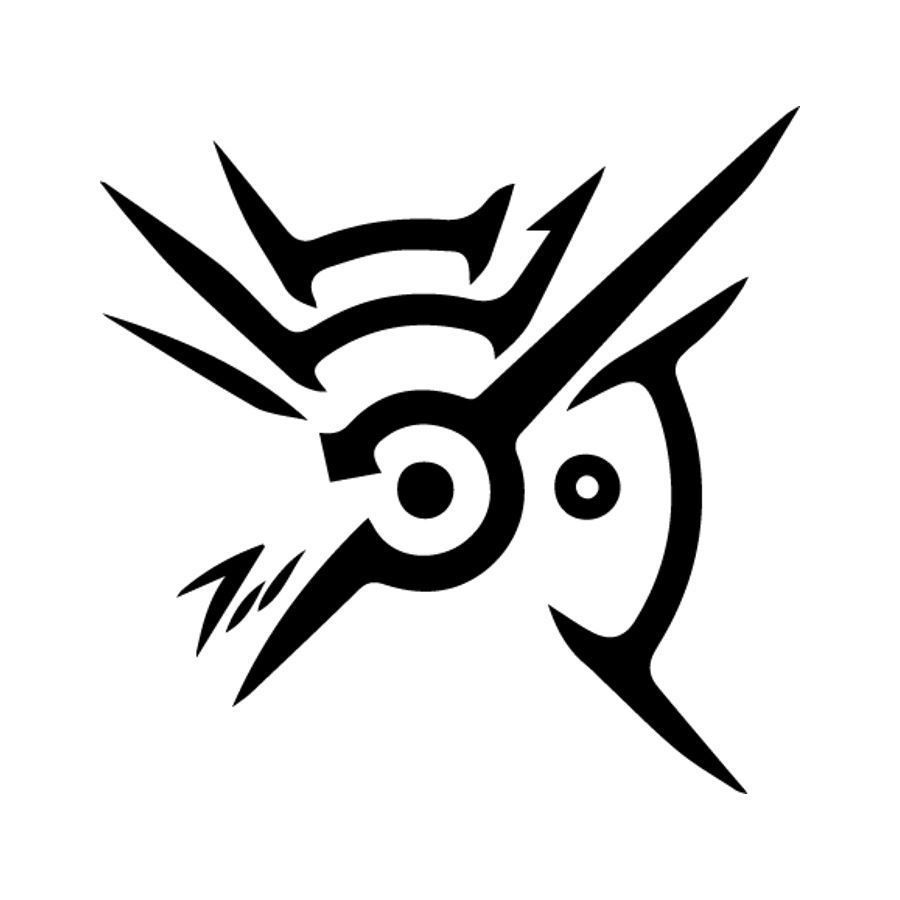

Chave das Sombras
Um objeto de extremo poder forjado das sombras de Nocturnal a deusa da escuridao primordial, essa chave foi criada pela propria deusa apos ela ser aprisionada dentro de uma criança durante um ritual que nao deu certo. A chave apesar de nao ter sido capaz de libertala serviu de grande ajuda para a criança que se tornou um feitiçeiro muito poderoso e temido.
Poderes:
Chave Mestra: A chave foi criada no intuito de abrir a prisao onde se encontra a deusa das sombras por isso ela possue a capacidade de abrir qualquer feichadura magica e nao magica ela transborda de energia sombria.
Mestra da Escuridao: Ao usar a chave na coroa das sombras o usuario ganha a capacidade de controlar as sombras.
Marca do Vazio
O simbolo de um deus antigo conhecido como o senhor do vazio, o seu culto ja foi a muito tempo proibido pela igreja unificada de todas as igrejas apesar disso muitos ainda o adoram em segredo. Sua marca é dada por ele para os mortais que mais se destacam ela consede poderes para seus portadores.
Poderes:
Blink: O poder mais comum dado pela marca é a capacidade de se teletransportar a pequenas distancias. Mecanicamente com uma açao bonus o usuario pode se teletransportar para um local que ele esteja vendo dentro de 20feets essa habilidade pode ser usada um numero de vezes igual a proficiencia por descanso longo caso seja usada escedendo esse limite o usuario deve levar 1d10 de dano de força cada vez que usala assim.